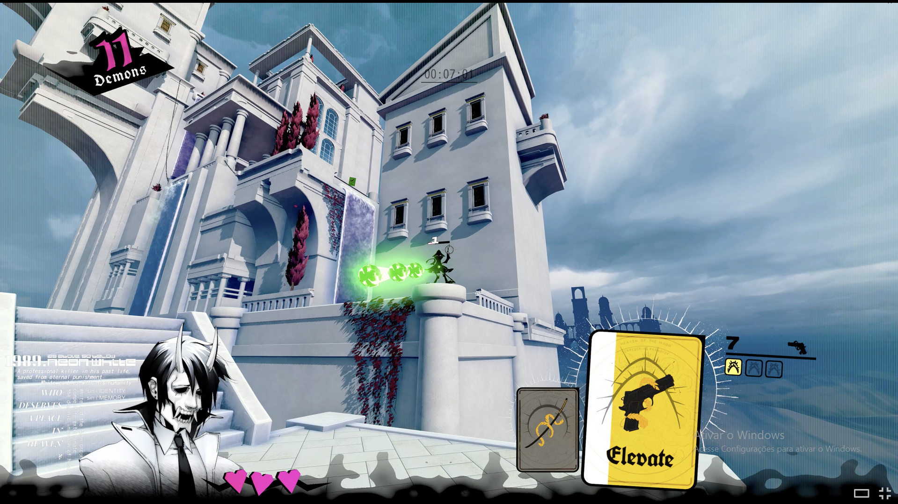
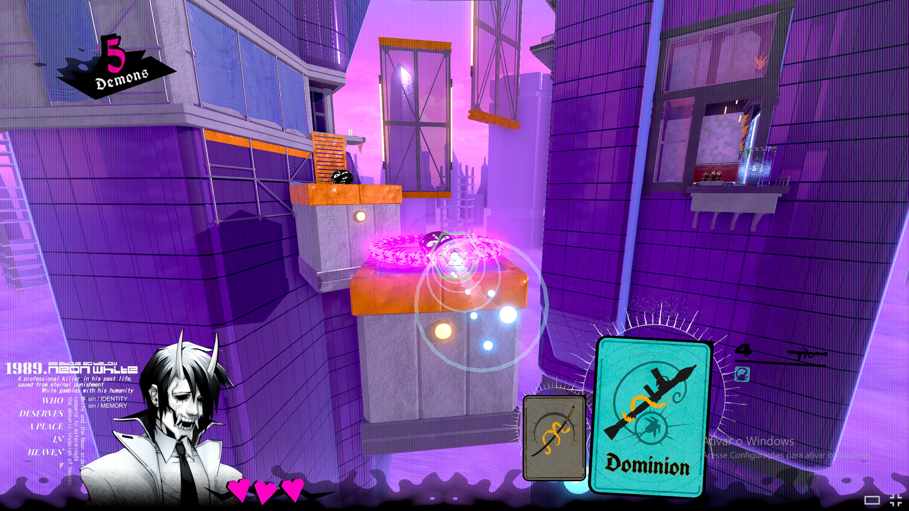
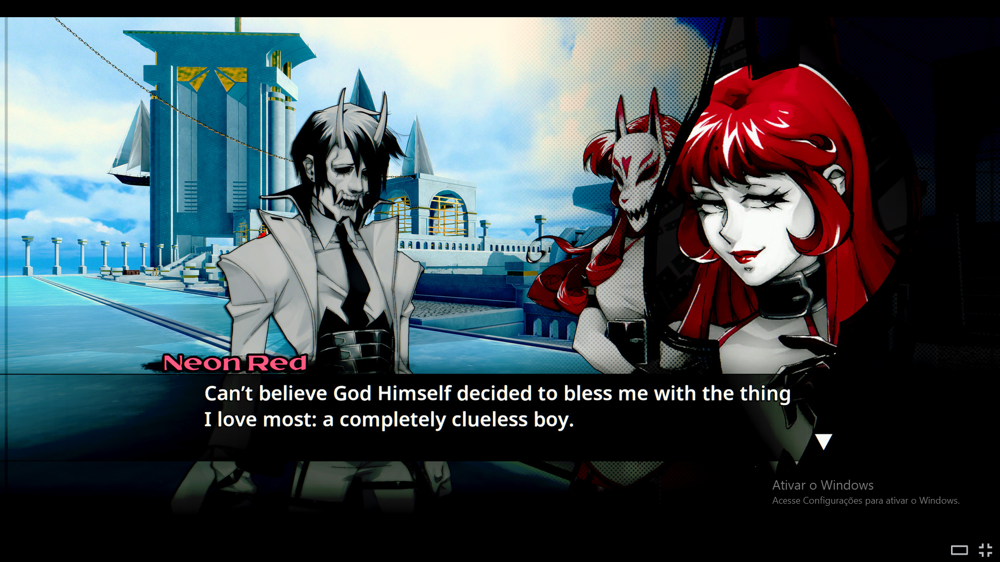

Sobre o jogo:
Neon White é um jogo de tiro em primeira pessoa focado em velocidade. O jogador controla
White, um assassino que morreu e foi enviado ao Céu para competir contra outros assassinos em uma competição
para eliminar demônios.
White, porém, não se lembra completamente de seu passado. Conforme a competição avança, ele reencontra antigos
conhecidos e começa a recuperar memórias de sua vida anterior. A competição acaba revelando que existe muito
mais acontecendo no Céu do que simplesmente uma disputa para decidir quem será o melhor exterminador.
Imagens:


Gameplay e Trailer:
Trilha sonora:
- Nome da faixa: Glass Ocean.
- Número da faixa: 1.
- Nome da faixa: Vainglorious Chorus.
- Número da faixa: 3.
- Nome da faixa: House of Cards.
- Número da faixa: 9.
Informações:
- Lançamento: 2022
- Desenvolvedora: Angel Matrix
- Publicadora: Annapurna Interactive